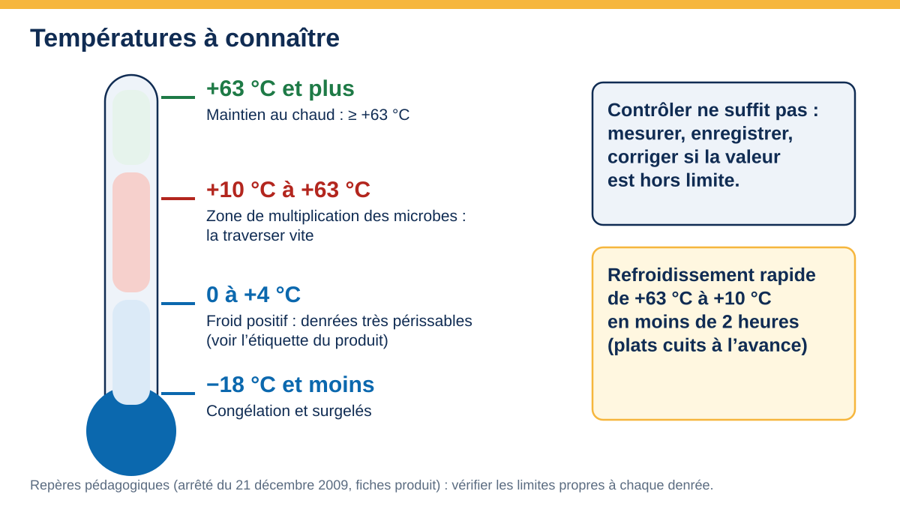
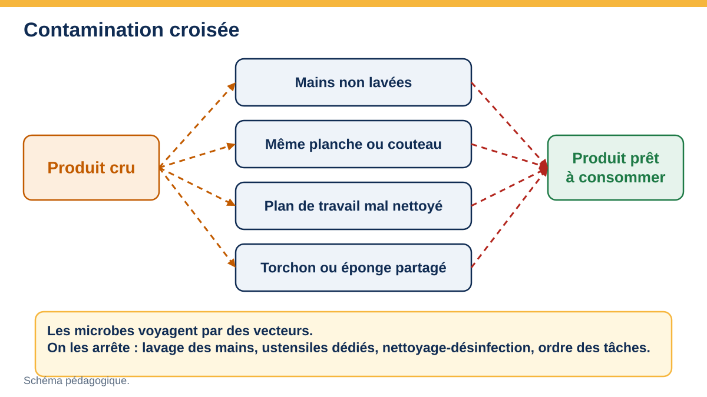
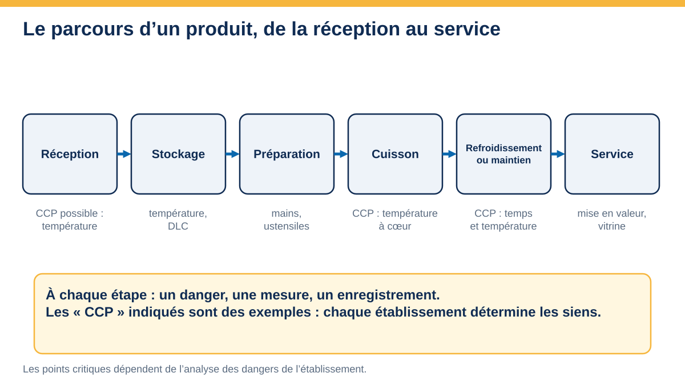
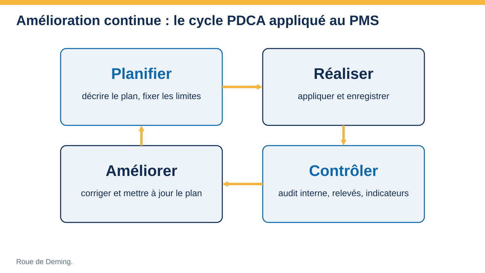
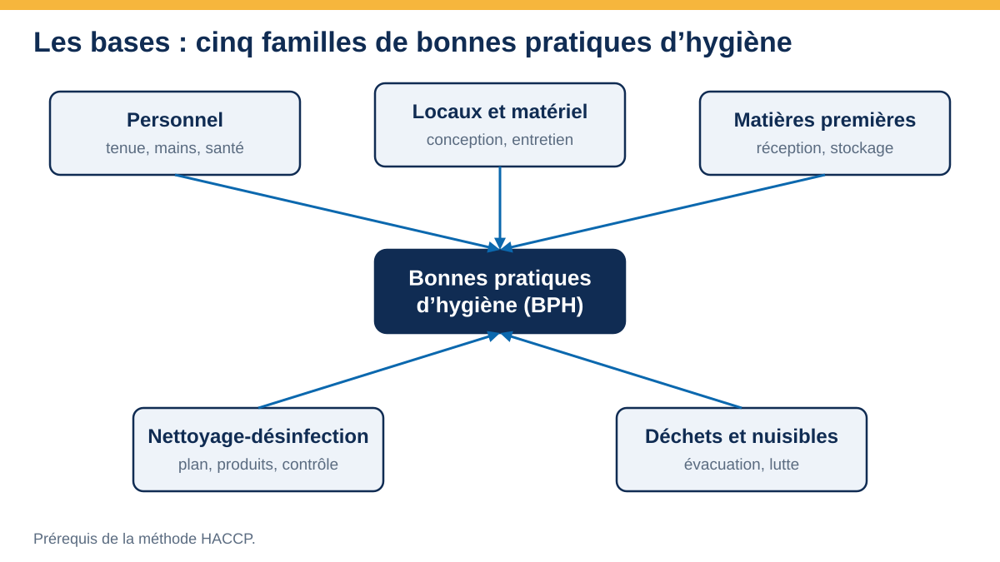
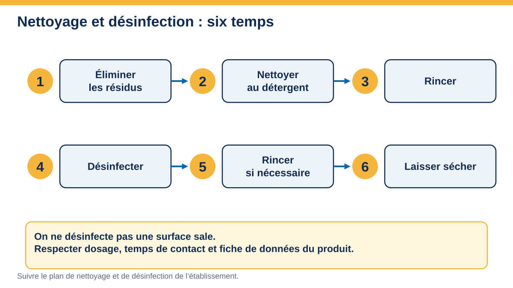
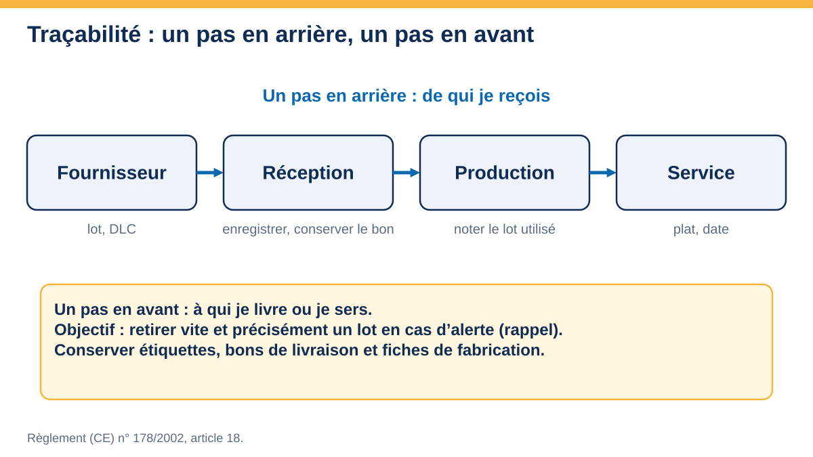

RESSOURCESSchémas
Schémas pédagogiques originaux : cliquez pour agrandir, flèches pour parcourir.

S02 · Températures à connaître
PMS · chaîne du froid S03 · Les 7 principes HACCP
S03 · Les 7 principes HACCP
PMS · HACCP S04 · Les 5M
S04 · Les 5M
PMS · recherche de causes
S05 · Contamination croisée
PMS · BPH
S06 · Parcours d’un produit
PMS · HACCP
S07 · Cycle PDCA
PMS · amélioration continue
S08 · Cinq familles de BPH
PMS · BPH
S09 · Nettoyage et désinfection
PMS · BPH S14 · Lavage des mains
S14 · Lavage des mains
PMS · BPH
S15 · Traçabilité
PMS · traçabilité